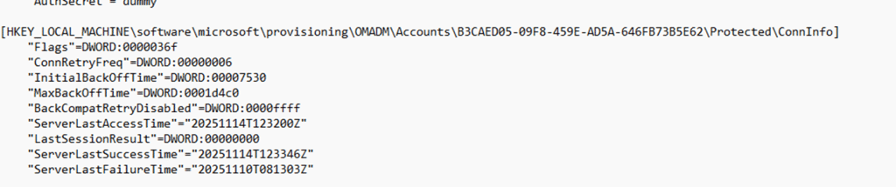
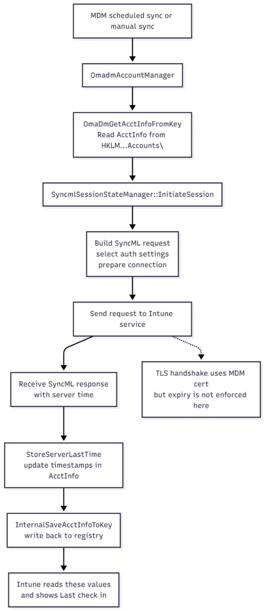
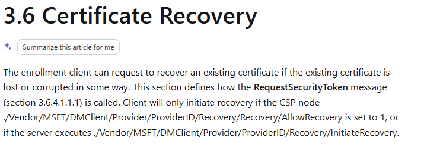
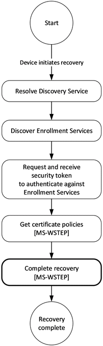

This blog exposes the gap between what Intune shows as Last check-in (last sync) and what the device is actually capable of once the MDM certificate has expired.
Please note: This blog is based on my own testing and analysis, including decompiling publicly available Windows binaries. No NDA covered information, internal documentation, or private sources were used.
Introduction
I ran into this while digging into a set of devices where the Intune MDM certificate simply refused to renew. The certificate had expired, long past its expiration date, yet the device still showed a perfectly fresh Last check-in (Last Sync Time) timestamp in the Intune portal.

At first glance, that made no sense. An expired certificate should block authentication. (as shown below, the certificate was expired on 11-1-2024)

No authentication means no check-in. At least, that is what most IT admins assume. But the Last Check-In (Last Sync Time) timestamps kept updating.

Not just in the Intune portal. The registry under the OMADM account key showed the same thing.
ServerLastAccessTime and ServerLastSuccessTime moved forward every time the device reached out.


The device looked healthy, while the certificate was clearly invalid.
So I started digging into the OMADM flow.
The OMADM account structure behind the scenes
Every Intune-enrolled device keeps a local record of its MDM account underHKLM\software\microsoft\provisioning\OMADM\Accounts\<AccountGUID>
Inside that key sits a packed structure the client calls AcctInfo (AccountInfo). That block contains the server URL, retry timers, flags, and, more interesting for this story, the timestamps Intune uses for the last check in:
- ServerLastAccessTime
- ServerLastSuccessTime
- LastSessionResult
When the device talks to Intune, the OMADM client does not just fire off a web request. It first loads this AcctInfo structure, runs a session setup, and only then starts sending SyncML. You can picture the simple version of the flow like this:


- A[MDM scheduled sync or manual sync] –> B[OmadmAccountManager]
- B –> C[OmaDmGetAcctInfoFromKey<br>Read AcctInfo from HKLM\…Accounts\<GUID>]
- C –> D[SyncmlSessionStateManager::InitiateSession]
- D –> E[Build SyncML request<br>select auth settings<br>prepare connection]
- E –> F[Send request to Intune service]
- F –> G[Receive SyncML response<br>with server time]
- G –> H[StoreServerLastTime<br>update timestamps in AcctInfo]
- H –> I[InternalSaveAcctInfoToKey<br>write back to registry]
- I –> J[Intune reads these values<br>and shows Last check in]
- F -.-> K[TLS handshake uses MDM cert<br>but expiry is not enforced here]
The Corrosponding Explanation
Step A is whatever kicked off the sync. That might be the regular DMClient schedule, a manual sync request from the portal, or the user pressing the sync button. Step B is where OmadmAccountManager wakes up and starts working with the local account. It calls OmaDmGetAcctInfoFromKey, which reads the AcctInfo block from the registry and unpacks it into memory.

With that state in hand, SyncmlSessionStateManager::InitiateSession sets up the session.

It populates the authentication fields, selects the app auth index, checks the account flags, and prepares the first SyncML envelope. None of that cares about certificate validity yet. Only after that setup does the client send the actual request to Intune. The TLS handshake uses the MDM certificate and its private key, but the code path here does not block on an expired NotAfter date. As long as the private key is available, the connection can be established, and the server can respond.
When the first response arrives, StoreServerLastTime extracts the server time from that response, converts it to ISO format, and updates the timestamps in the in-memory AcctInfo. InternalSaveAcctInfoToKey then writes that updated structure back into the OMADM account key in the registry.

Intune reads those values and displays them as a fresh last check-in, even though the certificate used for the handshake has already expired. The certificate will become relevant later in the session, when policy and management operations are attempted, but the timestamps are already updated at this early stage.
And that is exactly what was happening.
The Surprising Part: Certificate Expiry Is Not Checked on The Device
While going through the decompiled code for the SyncML session startup, one thing became immediately obvious. The OMADM client on the device itself does not check whether the MDM certificate has expired. The entire setup phase in SyncmlSessionStateManager::InitiateSession reads the account information, prepares the SyncML envelope, selects the authentication method, and establishes the connection. Not once does it validate the certificate’s NotAfter date.
Even the function that writes the timestamps,StoreServerLastTime, simply accepts the timestamp from the server and writes it directly into the AcctInfo structure without verifying whether the session certificate is valid or has expired.
So from the device’s perspective, a session with Intune can begin even if the certificate is completely out of date. This raised a new question: how does the device even reach Intune without a valid certificate?
Why the TLS Handshake Still Works
TLS should block expired certificates, right? But in this case, it does not. And there is a simple reason why. If Microsoft enforced strict certificate validity for client authentication, a device with a broken or expired management certificate would never be able to recover. The renewal flow would be impossible because the device would not even be allowed to start the session needed to request a new certificate.
Instead, the TLS handshake accepts expired certificates as long as the private key still exists. That allows the device to authenticate just enough for Intune to identify which device is attempting the connection. Intune then sends its initial SyncML response header, which includes a server timestamp.
The OMADM client receives that timestamp, stores it in the AcctInfo structure, and updates the registry. Once that happens, the Last check-in value in the portal moves forward, even though the certificate has expired.

Only after this early handshake does the server begin enforcing the certificate validity for real management operations. And that is where everything fails.
The Device Looks Healthy, but Management Is Gone?
After the timestamp update, the device tries to request new policies or fetch the latest configuration. This is where the expired certificate finally causes trouble. All meaningful operations fail silently. Policies are not updating, and because the IME also uses the Intune Certificate, none of the Win32 apps will be installed.

The only thing that continues to work is the initial contact with the service.
This creates a situation that feels a bit misleading in the Intune portal.
The device appears online. The last check-in value is up to date. Nothing looks broken at first glance. But behind the scenes, the device is no longer managed at all. It can “touch” the service, but cannot communicate in a meaningful way.”
Why This Last Check-In Behaviour Exists
This is not a bug. It is necessary. Without this behaviour, certificate recovery and renewal (expired certs) could never work.


A system (Enrollment Services) that refused expired certificates at the first connection would trap devices permanently. They would be stuck in an expired state with no way out except for a wipe or a hardware reset.


So Microsoft allows just enough of the session to proceed to support renewal. The timestamps are updated during that early stage, which can give the impression that the device is still healthy even when it is not.
The Real Problem: You Cannot Trust Last Check In
This leads to one unavoidable conclusion.
The Last check in value cannot be used as a device health indicator.
It only indicates that the device was able to contact Intune.
- It does not tell you that the device could retrieve the latest policies.
- It does not tell you that the certificate is valid.
- It does not tell you that management is still working.
An expired certificate can still move the Last-check in date forward while management is completely dead. If you truly want to know if a device is still under management, you have to look beyond that single value. Start with the Management certificate expiration date itself, and from there on sort by last check-in. That is where the truth sits.